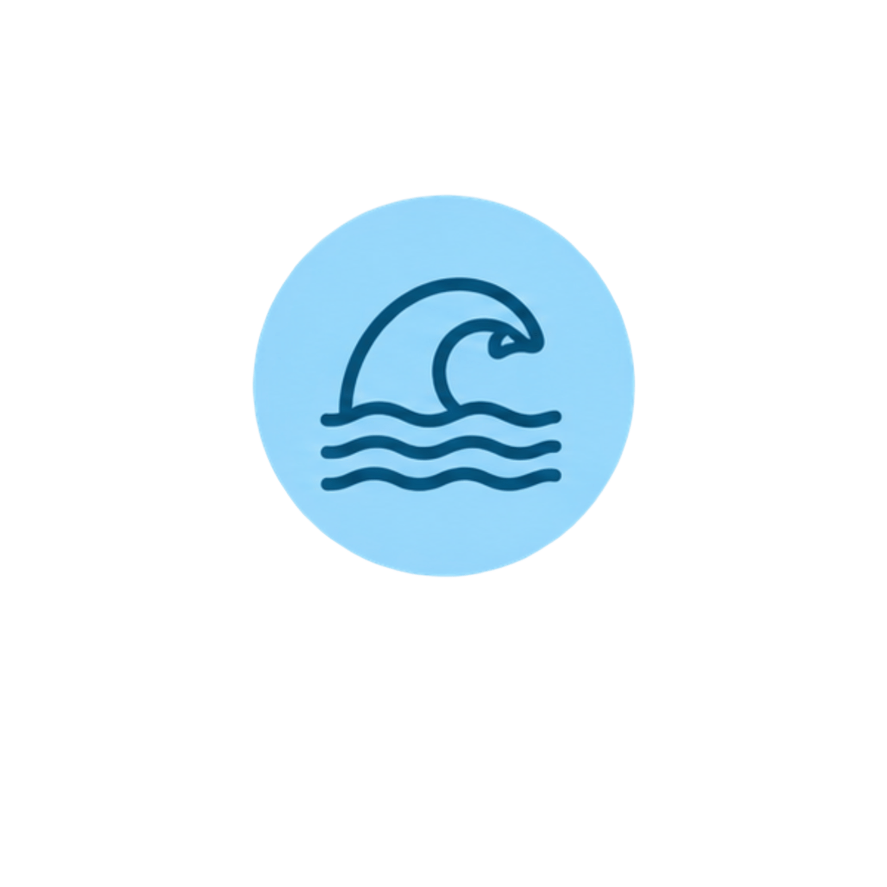
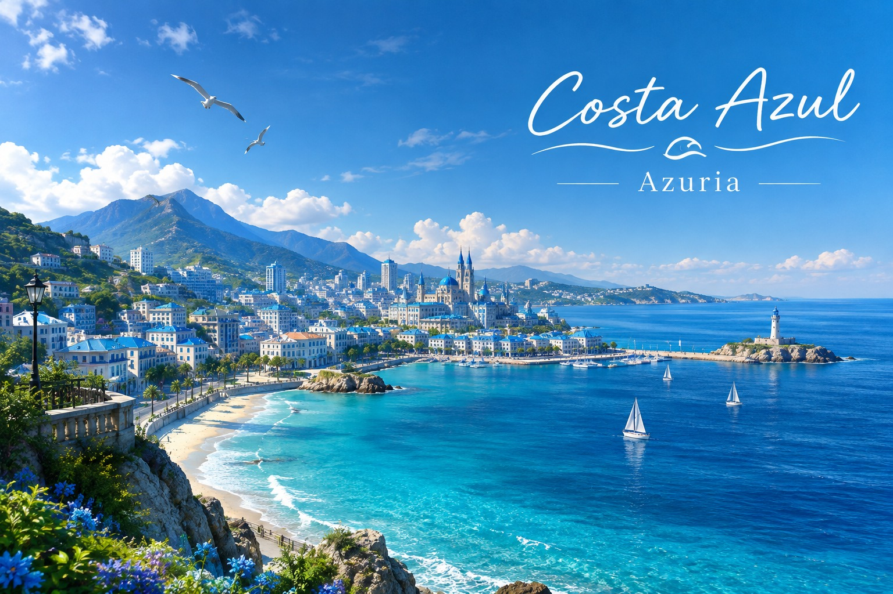
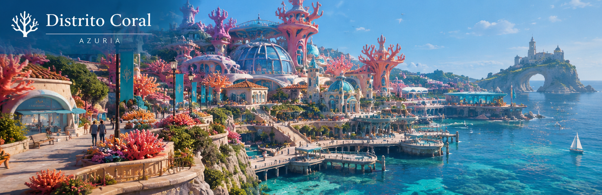
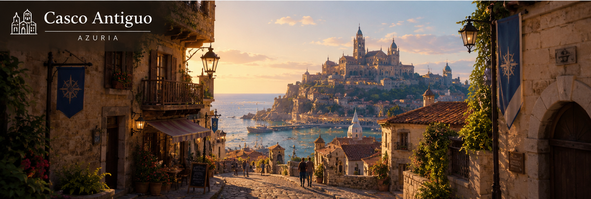

Naturaleza
Playas, parques y senderos para disfrutar del entorno natural.
Entre el mar y la ciudad
Azuria es una ciudad costera donde la naturaleza, la cultura y la vida urbana se encuentran ubicadas frente al Mar Azul. Ofrece paisajes únicos, espacios culturales y actividades al aire libre.

Playas, parques y senderos para disfrutar del entorno natural.
Museos, galerías, murales y espacios culturales que dan vida a la ciudad.
Uso de bicicletas, espacios verdes y acciones para el cuidado del ambiente.
Conciertos, ferias, festivales y actividades para todos los gustos.

El principal paseo marítimo de Azuria. Ofrece amplias playas de arena clara, gastronomía frente al mar y un extenso circuito para caminatas al atardecer.

Descubra el Distrito Coral, el corazón artístico y vibrante de Azuria. Camine entre maravillas arquitectónicas inspiradas en el océano, donde la creatividad local florece junto a vistas panorámicas de nuestra costa única. Un viaje para los sentidos.

Sumérjase en la rica historia del Casco Antiguo de Azuria. Recorra sus estrechas y pintorescas calles adoquinadas, admire la imponente arquitectura medieval y déjese cautivar por el encanto atemporal de nuestros monumentos más emblemáticos. Donde cada rincón cuenta una historia.